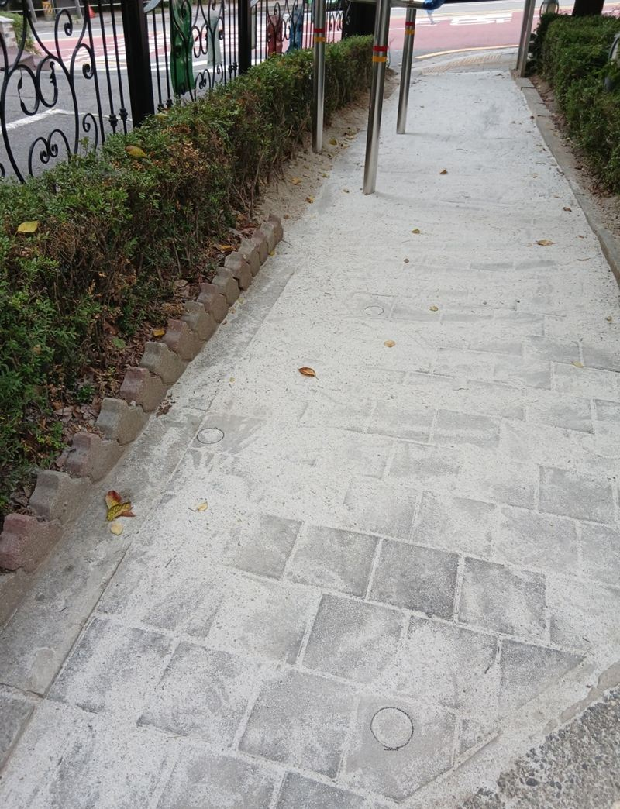
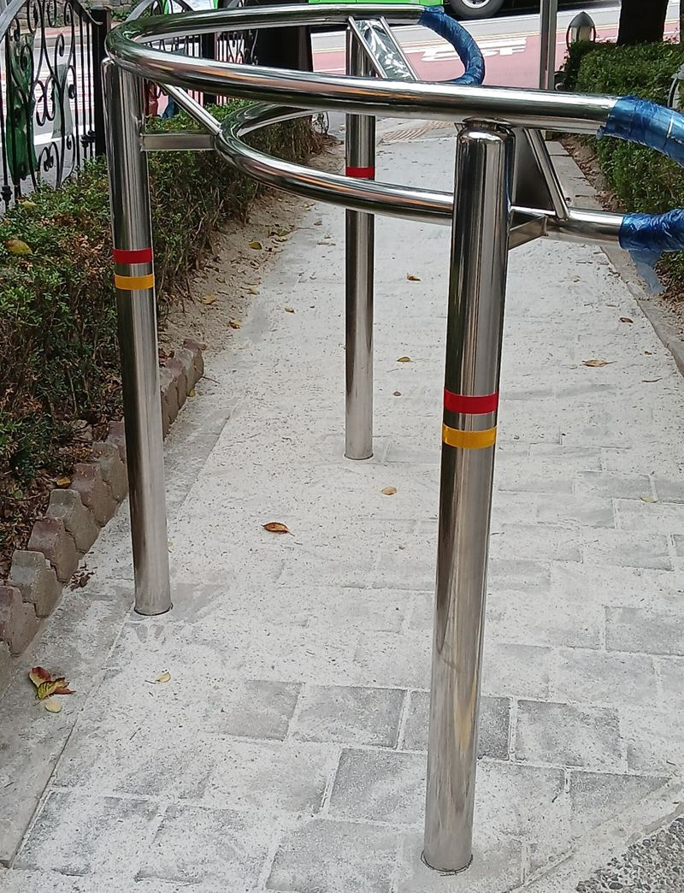
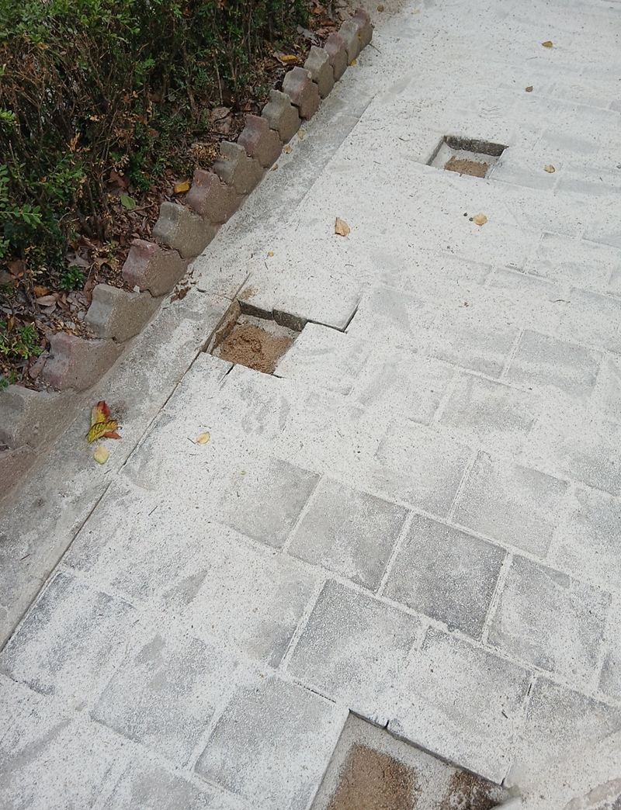
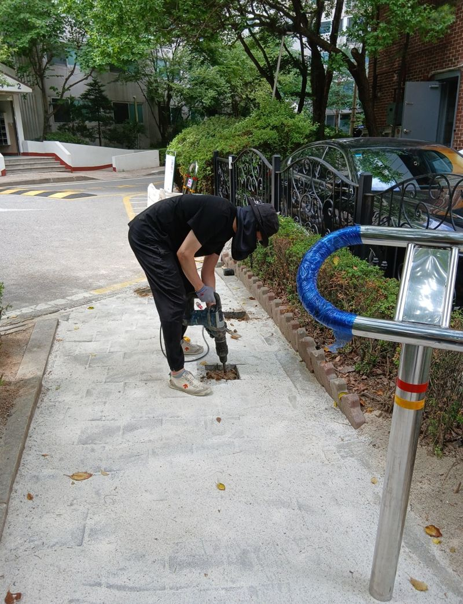
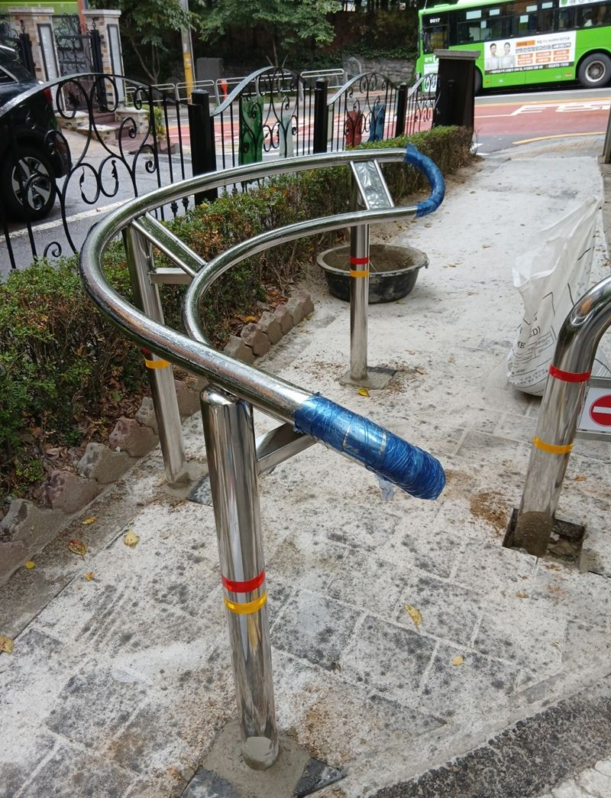
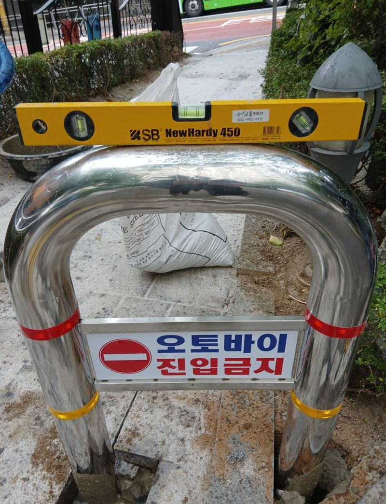

관악 오토바이 진입금지 구조물 설치 방법
← 밀어서 전후 비교 →
"정문 쪽 보행로로 오토바이가 자꾸 들어와서 주민들이 다니기 위험해요. 오토바이만 막는 구조물이 될까요?" 봉천동 아파트 관리 쪽 문의였어요. 배달이 늘면서 사람만 다니는 좁은 길까지 오토바이가 올라오고 있었어요. 막기만 하면 쉬운데, 유모차와 휠체어는 지나가야 했어요. 양 끝엔 기성품 C자형, 가운데엔 길 폭에 맞춰 주문 제작한 U자형 볼라드를 세워 오토바이만 걸리게 했어요.
| 현장 | 서울 관악구 봉천동 아파트 정문 보행로 |
|---|---|
| 문제 | 배달 오토바이가 보행로로 진입, 주민 민원 |
| 조건 | 오토바이는 막고 유모차·휠체어는 통과 |
| 한 일 | 통행 간격 실측·마킹 → 보도블록 걷기 → C자형 매립 설치 → U자형 주문 제작 후 가운데 설치 |
오토바이는 막고 유모차는 지나가게
이 작업의 핵심은 간격이에요. 기둥 사이가 넓으면 오토바이가 비집고 들어오고, 좁으면 유모차나 휠체어가 걸려요. 그래서 설치 전에 길 폭을 재고, 보행 약자가 지나갈 수 있는 최소 간격이 나오는지부터 확인했어요.
모양도 중요해요. 일자 기둥만 세우면 오토바이가 기둥 사이로 핸들을 틀어 들어올 수 있어요. 가로로 이어진 C자·U자 형태는 핸들 높이에서 길을 막아 주면서 아래로는 바퀴 달린 유모차가 지날 공간을 남겨요.


설치 순서
간격 재고 표시
현장 실측으로 기둥이 들어갈 자리를 바닥에 표시했어요.
보도블록 걷고 땅 파기
표시한 자리의 블록을 들어내고, 기둥이 수직으로 서도록 바닥을 평평하고 단단하게 정리하며 팠어요.


C자형 먼저 설치
양쪽 끝에는 주변과 부딪히지 않는 기성품 C자형을 골라 매립했어요. 보행로 테두리와 간격을 맞춰 수직·수평을 잡았어요.
가운데 U자형 설치
남은 가운데 자리에 맞춰 만든 U자형을 세우고, '오토바이 진입금지' 표시가 정면에서 보이게 방향을 맞췄어요.


기성품이 안 맞을 땐 주문 제작
양 끝을 세우고 나니 가운데 남은 폭이 시중 제품 규격과 맞지 않았어요. 억지로 기성품을 넣으면 한쪽 간격이 넓어져 오토바이가 빠져나가거나, 좁아져 유모차가 걸려요. 그래서 가운데 U자형은 남은 폭에 맞춰 따로 제작했어요. 제작 기간은 더 걸렸지만 간격을 원하는 대로 맞출 수 있어 이 길에는 가장 맞는 방법이었어요.
| 기성품 | 주문 제작 | |
|---|---|---|
| 장점 | 바로 구할 수 있음 | 남은 폭에 딱 맞춤 |
| 단점 | 길 폭과 안 맞을 수 있음 | 제작 기간이 더 듦 |
설치 후 지나가는 주민들이 "잘했다"며 관심을 보였다고 관리 쪽에서 전해 주셨어요. 도로와 보행로가 눈에 보이게 나뉘니 민원 대응 기준도 분명해졌어요.
오토바이 진입금지 구조물 질문
자전거도 막히나요?
간격에 따라 달라요. 자전거는 지나가게 할지 함께 정하고 간격을 잡아요.
배달 오토바이가 다른 길로 돌아 들어오면요?
단지 안 다른 보행로 입구도 함께 보고, 막아야 할 곳을 한 번에 정하는 게 좋아요.
바닥이 블록이 아니라 콘크리트예요.
콘크리트도 코어 타공 후 매립할 수 있어요. 바닥 두께를 확인해요.
문구 표지판도 달 수 있나요?
이번처럼 '오토바이 진입금지' 표시가 붙은 제품을 쓰거나 따로 부착할 수 있어요.
이미 서 있는 볼라드 사이에 더 세울 수 있나요?
기존 기둥 간격을 재 보고, 비는 자리에 맞는 형태를 골라 더 세울 수 있어요.
U자형과 C자형은 어떻게 골라요?
길 가운데는 양쪽을 막는 U자형, 벽이나 화단에 붙는 끝자리는 한쪽이 트인 C자형이 잘 맞아요.
다른 볼라드 현장
- 분당 도로 규제봉 앙카볼트 교체 방법
- 동탄 오토바이 진입금지 매립 볼라드 설치 기준
- 평택 매립 볼라드 파손 시 철거·재시공 방법
- 시흥 아파트 보도블럭 타공 후 볼라드 앙카 설치
- 용산 스텐 U자 볼라드 한두 개 설치 작업
- 부천 볼라드 설치 비용과 종류 · 블로그
- 군포 주차 카스토퍼 설치 비용과 주의사항 · 블로그
- 평택 보도블럭 볼라드 매립 깊이와 시공 방법 · 블로그
- 평택 아파트 차선 규제봉 파손 교체 방법 · 블로그
- 평택 이동형 브라켓 매립식 볼라드 설치 비용 · 블로그
- 평택 일자형 볼라드 고리 연결로 출입 막는 방법 · 블로그
- 양천 주차 진입금지 U자 볼라드 설치 목적과 방법 · 블로그
- 양평 도로 안전봉 설치·교체 작업 방법 · 블로그
오토바이가 들어오는 길 입구를 정면에서 찍어 보내 주세요.
전화 상담 010-4517-9872